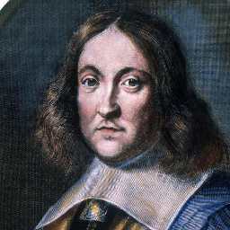

mathematics is the language of the gods!
It is the medium through which the laws of nature are written. I dare say, Each and every thing we know from the physical sciences to biological sciences to the arts(including language), can be broken down to some kind of mathematics. But it is of course easier to express the physical sciences in their pure mathematical form, in comparison to language. But fact remains, mathematics is the basic structure of everythin, the purest of knowledge and phylosophy.
In this spirit it is easy to forgive Pythagoras for his perception of numbers as mystical.
Pythagoras > (l.c. 571- c. 497 BCE) was a Greek philosopher whose teachings emphasized the immortality and transmigration of the soul (reincarnation), virtuous, humane behavior toward all living things, and the concept of “number” as truth in that mathematics not only cleared the mind but allowed for an objective comprehension of reality. He is best known in the modern day for the Pythagorean Theorem, a mathematical formula which states that the square of the hypotenuse of a right triangle is equal to the sum of the squares on the other two sides. This formula has been applied to measuring distance and space as, for example, in planning and executing the construction of a building. Although attributed to Pythagoras by ancient writers, modern scholars cite evidence from Babylonian texts, written some time before Pythagoras >, which discuss the same formula or, at least, one very similar. Almost nothing is known of Pythagoras' life even though later writers (such as Diogenes Laertius, l. c.180-240 CE) attempted to put together biographies based on stories and fragments from earlier works. Laertius' biography of Pythagorasis the most complete but, unfortunately, the author never cites the sources he drew from and so it is impossible to corroborate many of his claims. THE DIFFICULTY IN ANY DISCUSSION OF PythagorasIS TO SEPARATE THE ACTUAL MAN & HIS TEACHINGS FROM THE MYTHOLOGY WHICH SURROUNDED HIM. Pythagoras' influence on later philosophers, and the development of Greek philosophy generally, was enormous. Plato (l. c. 428/427-348/347 BCE) references Pythagoras in a number of his works and Pythagorean thought, as understood and relayed by other ancient writers, is the underlying form of Plato's philosophy. Plato's famous student Aristotle (l. 384-322 BCE) also incorporated Pythagorean teachings into his own thought and Aristotle's works would influence philosophers, poets, and theologians (among many others) from his time through the Middle Ages (c. 476-1500 CE) and into the modern day. Although Pythagorasremains a mysterious figure in antiquity, therefore, he also stands as one of the most significant in the development of philosophical and religious thought.
Johann Carl Friedrich Gauss
But to divide a cube into two cubes or a double square into two double squares and generally no power from then the third through infinity into two of the same name, is not permissible.For which thing I have "but of course" discovered a wonderful proof, one One so beautiful. But the smallness of my margins, is too narrow to contain (Fermat himusellef)
Pierre de Fermat was a French lawyer and government official most remembered for his work in number theory; in particular for Fermat's Last Theorem. He is also important in the foundations of the calculus. Thumbnail of Pierre Fermat View eight larger pictures
